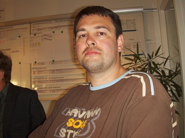

|  |
Manuel RoosUdviklingsmedatbejder hos Flextrafik, der er en del af Trafikselskabet Movia Jeg står for vedligeholdelse af data og systemsupport til interne brugere samt kunder, kommuner og regioner. Tlf.: 26 85 22 45 Mail: don_manuello@hotmail.com |
| Dato | Virksomhed | Stilling |
|---|---|---|
| -1995 | Aviser, rengøring, lagerarbejde | fritidsjob |
| 1995-2001 | Metro Engroslager (frug og grønt) | |
| 1998-1999 | Gardehusarregimentet (Hesteskadronen) | værnepligtig |
| 1999-2001 | Retten i Hvidovre (all-round) | kontorelev |
| 2001-2002 | Retten i Rødovre (kassen) | assistent |
| 2002-2003 | overassistent | |
| 2003-2004 | Retten i Århus (tinglysningsafdeling) | |
| 2004-2007 | Nordjyllands Trafikselskab | call-center medarbejder |
| 2007 | vognstyrer | |
| 2007-2011 | Trafikselskabet Movia (Flextrafik) | trafikstyrer/faglig koordinator |
| 2011- | udviklingsmedadbejder |
| 1984-1995 | Folkeskolens 10. klasse |
| 1995-1996 | Handelskolens Grundeksamen (HG) |
| 1996-1998 | Højere Handelseksamen (HHX) |
| 1999-2001 | Kontoruddannelse med speciale/STAT |